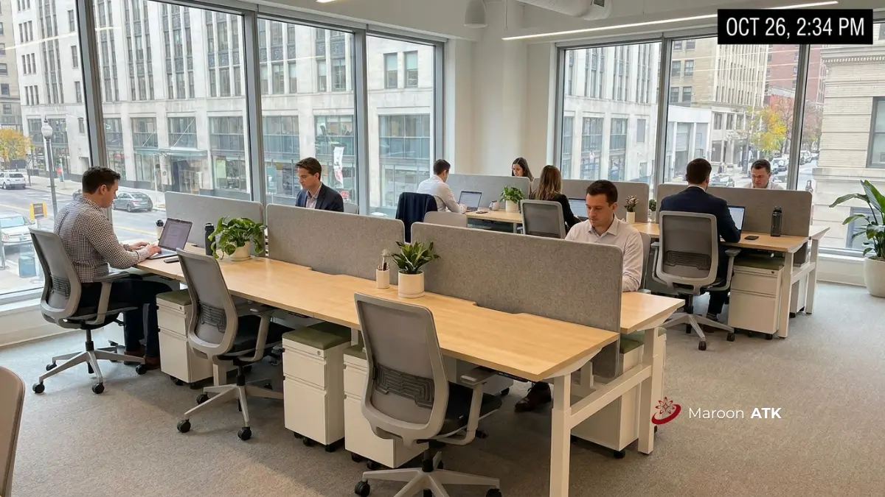

Apa Saja Komponen yang Membentuk Harga Paket Furniture Kantor?
Harga paket furniture kantor untuk perusahaan skala menengah dipengaruhi oleh kombinasi spesifikasi material (ketebalan MFC/Multipleks dan finishing HPL), volume workstation, kompleksitas instalasi teknis, serta biaya logistik pengiriman di masing-masing kota layanan.
Komponen yang membentuk harga paket furniture kantor mencakup jenis material inti, ketebalan bahan, jasa desain layout ruangan, serta biaya pengiriman dan instalasi perakitan di lokasi kantor. Spesifikasi teknis seperti ketebalan papan meja kerja (misalnya MFC 25mm Grade E1 ramah lingkungan), ketebalan pipa besi hollow powder coating di kisaran 1,2mm hingga 1,5mm, dan kualitas lapisan PVC edge banding harus tertulis eksplisit dalam Surat Penawaran Harga (SPH).
Tanpa rincian material ini, perusahaan sulit membandingkan penawaran antar vendor secara adil, karena dua set workstation dengan tampilan visual yang serupa bisa memiliki daya tahan dan masa pakai yang jauh berbeda. Selain itu, layanan survei lokasi dan pembuatan denah layout 2D/3D gratis yang disediakan MAROON ATK sangat membantu memastikan ukuran furniture tepat presisi dengan denah ruangan sebelum proses produksi dimulai.
Bagaimana Rincian Biaya Paket Furniture Kantor di Jakarta?
Biaya paket furniture kantor di Jakarta sangat dipengaruhi oleh regulasi ketat gedung perkantoran Grade A dan B di area segitiga emas seperti SCBD, Sudirman, Kuningan, dan Gatot Subroto yang membatasi jam kerja instalasi serta mewajibkan fit-out deposit.
| Aspek Lapangan di Jakarta | Konsekuensi Biaya & Waktu | Solusi Tim MAROON ATK |
|---|---|---|
| Jam Kerja Terbatas | Instalasi dilarang pada jam 08.00–17.00 WIB, memicu biaya lembur kerja malam atau akhir pekan. | Tim teknisi standby shift malam tanpa mengganggu operasional normal klien. |
| Fit-Out Deposit & Izin Kerja | Penyetoran deposit jaminan kerusakan gedung sebesar Rp5–20 juta ke pengelola gedung. | Bantuan pengurusan izin kerja (work permit) dan jaminan asuransi keselamatan teknisi. |
| Akses Lift Barang & Loading Dock | Dimensi workstation besar harus muat di service elevator dan antrean loading dock ketat. | Desain knock-down modular presisi yang mudah dimobilisasi lewat lift barang. |
Bagaimana Rincian Biaya Paket Furniture Kantor di Surabaya?
Biaya paket furniture kantor di Surabaya umumnya dipengaruhi oleh kebutuhan kawasan industri (seperti SIER dan Rungkut) serta kawasan perkantoran pusat bisnis yang tersebar di wilayah Surabaya Barat dan Surabaya Pusat.
Perusahaan skala menengah di Surabaya sering memiliki kebutuhan ekspansi ruang di kawasan bisnis yang jaraknya cukup berjauhan, sehingga efisiensi rute pengiriman dan penjadwalan instalasi menjadi pertimbangan penting untuk menekan biaya logistik. Verifikasi hidden cost seperti jasa antar dan bongkar muat tetap wajib dilakukan agar harga yang tertera dalam Surat Penawaran Harga benar-benar mencerminkan biaya akhir tanpa tagihan mendadak di lokasi.

Penataan meja dan kursi kantor open-space ergonomis yang adaptif untuk kebutuhan ekspansi kantor di kota-kota metropolitan Indonesia.
Bagaimana Rincian Biaya Paket Furniture Kantor di Malang?
Biaya paket furniture kantor di Malang cenderung dipengaruhi oleh pesatnya pertumbuhan institusi pendidikan, startup digital, dan perusahaan skala menengah yang berkembang di sekitar area kampus serta koridor bisnis kota Malang.
Dengan tingginya kebutuhan institusi pendidikan di Malang, kebutuhan furniture kantor administrasi kampus, ruang dosen, dan ruang staf sering kali digabung dalam satu paket pengadaan menyeluruh. Klien di kota ini sangat dianjurkan memastikan vendor memiliki unit sampel fisik atau portofolio riil sebelum pemesanan kuantitas besar, agar kenyamanan ergonomis kursi dan meja kerja teruji secara langsung.
Bagaimana Rincian Biaya Paket Furniture Kantor di Denpasar?
Biaya paket furniture kantor di Denpasar perlu memperhitungkan jarak logistik pengiriman antar pulau serta karakteristik iklim tropis pesisir yang memiliki kelembapan udara relatif tinggi.
Pengiriman furniture ke Denpasar membutuhkan manajemen logistik yang lebih terencana dibanding pengiriman antar kota di Pulau Jawa, sehingga estimasi lead time pengiriman laut/darat perlu dikonfirmasi lebih awal saat negosiasi SPH. Selain itu, material furniture yang digunakan untuk sektor pariwisata, agensi kreatif, dan kantor jasa di Bali membutuhkan lapisan finishing HPL dan PVC edge banding yang tahan terhadap kelembapan tinggi agar tidak mudah terkelupas atau lapuk.
Bagaimana Rincian Biaya Paket Furniture Kantor di Makassar?
Biaya paket furniture kantor di Makassar dipengaruhi oleh posisi strategis kota sebagai gerbang utama dan hub logistik Indonesia Timur yang melayani kantor-kantor cabang di wilayah Sulawesi, Maluku, hingga Papua.
Sebagai titik pusat operasional regional, Makassar sering menjadi basis pengadaan bagi instansi pemerintah dan BUMN yang memesan paket furniture untuk didistribusikan ke unit kerja di kawasan sekitarnya. Oleh sebab itu, kelengkapan administrasi legalitas badan usaha vendor seperti NIB, NPWP perusahaan, Akta Pendirian, dan status Pengusaha Kena Pajak (PKP) menjadi syarat krusial agar Surat Perintah Kerja (SPK) dapat disahkan oleh bendahara pengadaan.
Apa yang Harus Diverifikasi Sebelum Menyetujui Penawaran Furniture Kantor?
Sebelum menerbitkan Purchase Order (PO) resmi atau menandatangani kontrak, tim procurement wajib melakukan empat tahap verifikasi berikut:
- Verifikasi Spesifikasi Material di SPH: Pastikan jenis bahan dasar (MFC, Multipleks, atau Plywood), ketebalan papan meja, jenis rel laci bantalan bola, dan ketebalan rangka besi hollow tercantum detail hitam di atas putih.
- Cek Ketiadaan Hidden Cost: Konfirmasikan apakah penawaran harga sudah bersifat all-in mencakup ongkos kirim, jasa bongkar muat porter, dan jasa instalasi perakitan di lantai target.
- Pastikan Legalitas Badan Usaha & Faktur Pajak: Pastikan vendor berbadan hukum PT resmi dengan status PKP aktif yang menerbitkan e-Faktur PPN 11% yang sah secara perpajakan.
- Klausul Berita Acara Serah Terima (BAST): BAST wajib diterbitkan pasca-inspeksi bersama dan commissioning test untuk memastikan seluruh komponen berfungsi sempurna dengan garansi purna jual resmi.
Perusahaan yang sedang menyusun rencana pengadaan furniture ruang kerja sekaligus membutuhkan pengadaan ATK rutin bulanan dapat meninjau katalog lengkap di panduan perhitungan kebutuhan ATK kantor atau mengeksplorasi pemasangan fasilitas rapat canggih via instalasi interactive flat panel.
Pertanyaan yang Sering Diajukan (FAQ)
Harga dipengaruhi oleh spesifikasi material, biaya kirim dan instalasi, kompleksitas desain layout, serta lokasi pengiriman di masing-masing kota.
Sebaiknya dikonfirmasi eksplisit ke vendor karena hidden cost seperti jasa antar dan instalasi kadang tidak tercantum dalam penawaran awal.
Dokumen yang perlu diverifikasi meliputi Surat Penawaran Harga dengan spesifikasi teknis lengkap, legalitas badan usaha, dan status Pengusaha Kena Pajak vendor.

Asher Angelica
Spesialis perencanaan tata ruang kerja modern, standarisasi ergonomi workstation modular, dan manajemen pengadaan furniture korporat skala menengah hingga enterprise di berbagai kota besar di Indonesia.